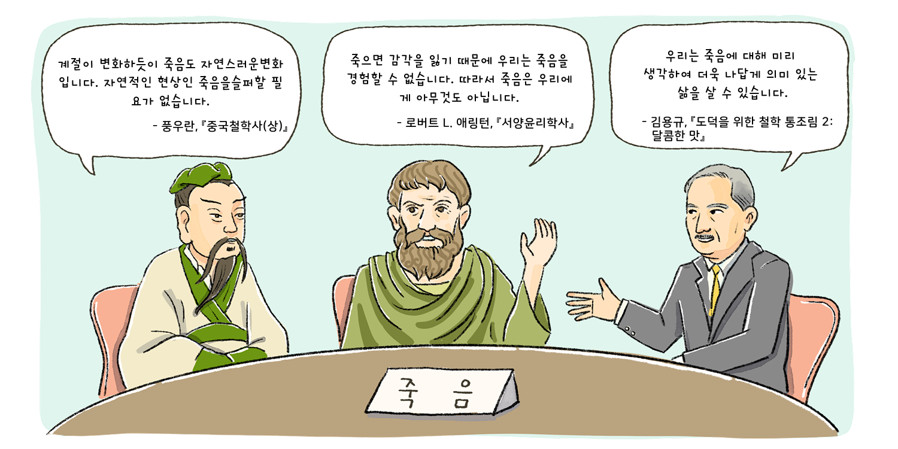

자료 읽기죽음을 두려워할 필요가 있을까

자료 읽기 죽음에 대한 위 사상가들의 생각을 살펴보고, 특히 공감되는 의견은 무엇인지 이야기해 보자.
나는 하이데거의 생각에 공감하였다. 언젠가 죽는다는 사실을 떠올린다면 지금의 시간을 더 소중히 여기고 의미 있게 살아갈 수 있기 때문이다.
나는 하이데거의 생각에 공감하였다. 언젠가 죽는다는 사실을 떠올린다면 지금의 시간을 더 소중히 여기고 의미 있게 살아갈 수 있기 때문이다.